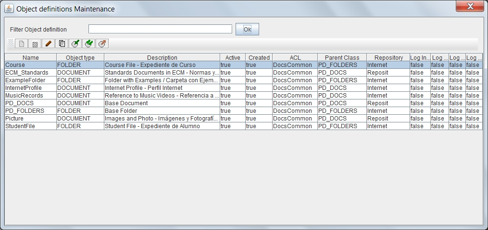

By selecting the option to manage Object Definitions, will appear the form "list of Object Definitions". This form allows you to maintain all the system Object Definitions.
In OPD we can define different types of folders (containers) and types of documents to model the documentary structure of the organization. From basic types of objects (or PD_FOLDERS PD_DOCS) it is possible create an unlimited number of subtypes each of whom will inherit the metadata defined in "father" types. To handle or search for documents we can consider independently each type or subtypes can be included in the operation.
The folders or containers can also be defined with different metadata and with a hierarchical structure that reflects the desired model.
To filter object definitions that you want to review, just enter part of the name in the text box and press the button. The list of object definitions that meet the conditions appear in the results table. Pressing the button without entering any value you see all the elements on which the user has permission. The results table shows the data:

Esa tabla de resultados puede ordenarse seleccionando la cabecera de cada columna. Puede también cambiarse el tamaño de cada columna arrastrando la línea separadora de las cabeceras
Sobre la tabla de resultados se dispone de varios botones que permiten realizar operaciones sobre el elemento seleccionado.
SIEMPRE debe seleccionarse un elemento, incluso para crear un nuevo tipo, ya que el elemento seleccionado se tomara como clase padre del nuevo tipo documental. Si el seleccionado es una carpeta, el nuevo tipo es una carpeta, si es un documento, el nuevo tipo es una carpeta. Las operaciones disponibles son:
Debe tenerse en cuenta al exportar e importar que algunos elementos pueden tener dependencia de otros, por lo que debe exportarse todos los elementos relacionados y en el momento de importarse hacerlo en el orden adecuado
En caso de producirse un error (carencia de permisos del usuario, incoherencia de los datos, etc), la operación se cancela y se comunicará al usuario el motivo del error.
Ver: Mantenimiento Definiciones de Objetos